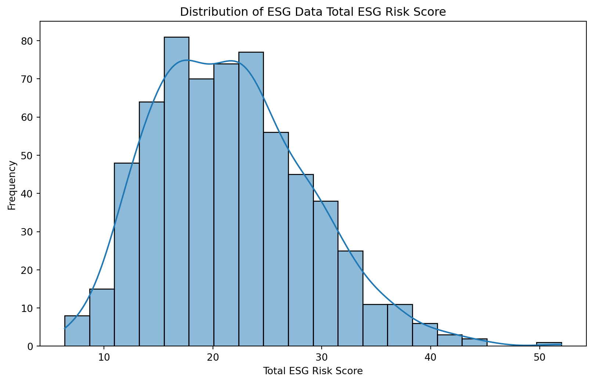
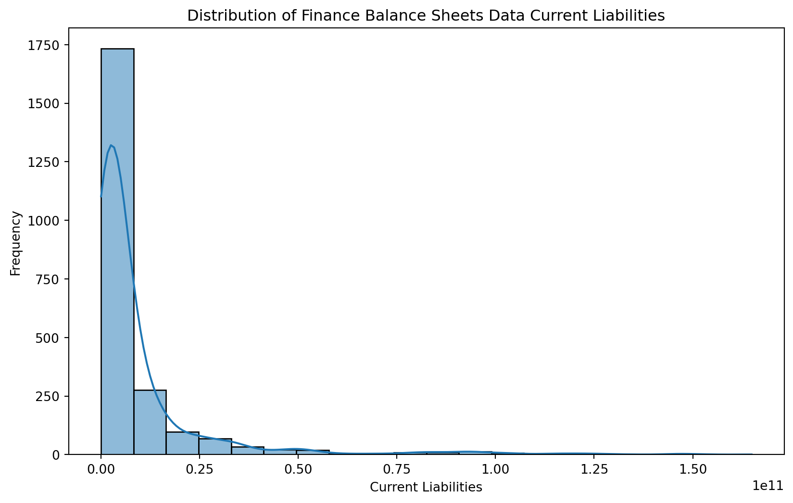

import pandas as pd
import seaborn as sns
import matplotlib.pyplot as plt
finance_balance_sheets = pd.read_csv('yfinance-balance-sheet.csv')
finance_income_statement = pd.read_csv('yfinance-income-stmt.csv')
finance_history = pd.read_csv('yfinance-history.csv')
esg_proj_data = pd.read_csv('esg_proj_data.csv')DANL 210 Project
Understanding ESG Metrics and Financial Data: A Data Analysis Project
1 1. Introduction üìà
1.1 Background üßë‚Äçüíº
The integration of Environmental, Social, and Governance (ESG) factors have become increasingly important for investors, businesses, and policymakers due to their implications for sustainability, ethical practices, and long-term financial performance. Understanding the relationship between ESG metrics and financial/accounting data is crucial for making informed investment decisions, developing sustainable business strategies, and shaping public policy.
1.2 Statement of the Problem üßë‚Äçüíª
This project seeks to analyze the interplay between ESG metrics, stock performance, and financial health by integrating data from multiple sources. The specific problem addressed is the lack of comprehensive insights into how ESG factors influence stock market performance and financial outcomes. By conducting data analysis, we aim to uncover patters, correlations, and trends that shed light on the relationship between sustainable practices, market valuation, and corporate financial performance. This analysis will provide valuable insights for investors, business, and policymakers seeking to incorporate ESG considerations into their decision-making processes and drive positive social and environmental impact.
2 Load the Data
3 2. Descriptive Statistics üíª
3.1 Descriptive Statistics for Yfinance History
3.1.1 Ungrouped
print("\nYfinance History Data Descriptive Statistics:")
print(finance_history.describe())
Yfinance History Data Descriptive Statistics:
Open High Low Close \
count 197796.000000 197796.000000 197796.000000 197796.000000
mean 149.641065 151.227362 148.152789 149.747446
std 329.775746 333.343590 326.743053 330.150447
min 1.030000 1.060000 0.780000 0.980000
25% 40.284990 40.740002 39.843464 40.310957
50% 82.321109 83.207870 81.400002 82.359852
75% 155.430508 156.976242 153.974345 155.511169
max 8022.919922 8158.990234 8010.000000 8099.959961
Volume Dividends Stock Splits
count 1.977960e+05 197796.000000 197796.000000
mean 4.134482e+06 0.006791 0.000104
std 9.289442e+06 0.099606 0.014192
min 0.000000e+00 0.000000 0.000000
25% 8.323000e+05 0.000000 0.000000
50% 1.707600e+06 0.000000 0.000000
75% 3.854425e+06 0.000000 0.000000
max 3.160112e+08 15.000000 4.000000 3.1.2 Grouped/Selected
finance_history['Volume'].describe()count 1.977960e+05
mean 4.134482e+06
std 9.289442e+06
min 0.000000e+00
25% 8.323000e+05
50% 1.707600e+06
75% 3.854425e+06
max 3.160112e+08
Name: Volume, dtype: float643.2 Descriptive Statistics for Balance Sheets
3.2.1 Ungrouped
print("\nFinance Balance Sheets Data Descriptive Statistics:")
print(finance_balance_sheets.describe())
Finance Balance Sheets Data Descriptive Statistics:
Ordinary Shares Number Share Issued Net Debt Total Debt \
count 2.658000e+03 2.658000e+03 2.317000e+03 2.626000e+03
mean 6.405716e+08 7.568339e+08 1.291833e+10 1.922311e+10
std 1.296627e+09 1.442190e+09 2.240450e+10 4.221775e+10
min 3.167625e+06 9.589239e+06 2.200000e+07 1.404000e+06
25% 1.420809e+08 1.716074e+08 2.174900e+09 3.349737e+09
50% 2.720531e+08 3.142580e+08 5.714136e+09 7.261294e+09
75% 5.952015e+08 7.113500e+08 1.322700e+10 1.758525e+10
max 1.572341e+10 1.572341e+10 2.238890e+11 4.421400e+11
Tangible Book Value Invested Capital Working Capital \
count 2.659000e+03 2.658000e+03 2.314000e+03
mean 6.140413e+09 3.453963e+10 1.977094e+09
std 2.906924e+10 6.710119e+10 7.778440e+09
min -9.834700e+10 1.221960e+08 -4.443000e+10
25% -1.823000e+09 7.054684e+09 -2.506682e+08
50% 2.157460e+09 1.482450e+10 9.074155e+08
75% 8.880100e+09 3.350450e+10 2.709800e+09
max 2.636610e+11 7.488770e+11 9.313100e+10
Net Tangible Assets Capital Lease Obligations Common Stock Equity \
count 2.659000e+03 1.651000e+03 2.659000e+03
mean 6.475658e+09 1.730649e+09 1.661968e+10
std 3.034589e+10 5.731350e+09 3.221102e+10
min -9.834700e+10 -6.100000e+07 -1.723300e+10
25% -1.827950e+09 1.591580e+08 3.229000e+09
50% 2.120019e+09 3.918690e+08 7.500000e+09
75% 9.090150e+09 1.001500e+09 1.753100e+10
max 2.722630e+11 7.729700e+10 3.067370e+11
... Trading Securities Investmentsin Subsidiariesat Cost \
count ... 1.060000e+02 3.600000e+01
mean ... 8.437230e+10 2.777855e+09
std ... 1.371783e+11 3.849279e+09
min ... 0.000000e+00 0.000000e+00
25% ... 6.462450e+07 4.755000e+08
50% ... 1.174500e+09 1.388500e+09
75% ... 1.357220e+11 1.962875e+09
max ... 5.742130e+11 1.228100e+10
Total Partnership Capital Limited Partnership Capital \
count 1.000000e+01 1.000000e+01
mean 1.964380e+10 1.963130e+10
std 1.568801e+10 1.567458e+10
min 4.479000e+09 4.479000e+09
25% 4.826250e+09 4.826250e+09
50% 1.910150e+10 1.908800e+10
75% 3.345025e+10 3.343100e+10
max 3.668200e+10 3.665600e+10
Dueto Related Parties Non Current Duefrom Related Parties Non Current \
count 1.400000e+01 1.100000e+01
mean 9.710000e+08 1.903109e+07
std 8.538153e+08 4.242806e+07
min 5.000000e+06 0.000000e+00
25% 2.992500e+08 0.000000e+00
50% 6.075000e+08 1.805000e+06
75% 1.882750e+09 3.529500e+06
max 2.376000e+09 1.350000e+08
Fixed Assets Revaluation Reserve Current Deferred Taxes Liabilities \
count 3.000000e+00 2.000000e+00
mean 3.001667e+09 9.285000e+07
std 5.158336e+09 9.192388e+05
min 2.300000e+07 9.220000e+07
25% 2.350000e+07 9.252500e+07
50% 2.400000e+07 9.285000e+07
75% 4.491000e+09 9.317500e+07
max 8.958000e+09 9.350000e+07
Current Deferred Taxes Assets General Partnership Capital
count 5.000000e+00 5.0
mean 3.234000e+08 -2000000.0
std 6.618761e+07 0.0
min 2.550000e+08 -2000000.0
25% 2.820000e+08 -2000000.0
50% 3.100000e+08 -2000000.0
75% 3.440000e+08 -2000000.0
max 4.260000e+08 -2000000.0
[8 rows x 142 columns]3.2.2 Grouped/Selected
finance_balance_sheets[['Total Assets','Total Debt']].describe()| Total Assets | Total Debt | |
|---|---|---|
| count | 2.659000e+03 | 2.626000e+03 |
| mean | 9.075012e+10 | 1.922311e+10 |
| std | 2.940459e+11 | 4.221775e+10 |
| min | 1.891360e+08 | 1.404000e+06 |
| 25% | 1.131355e+10 | 3.349737e+09 |
| 50% | 2.523760e+10 | 7.261294e+09 |
| 75% | 6.313150e+10 | 1.758525e+10 |
| max | 4.090727e+12 | 4.421400e+11 |
3.3 Descriptive Statistics Income Statements
3.3.1 Ungrouped
print("\nFinance Income Statement Data Descriptive Statistics:")
print(finance_income_statement.describe())
Finance Income Statement Data Descriptive Statistics:
Tax Effect Of Unusual Items Tax Rate For Calcs Normalized EBITDA \
count 2.659000e+03 2659.000000 2.314000e+03
mean -1.263741e+07 0.203667 1.463302e+09
std 1.516601e+08 0.080287 3.230278e+09
min -5.202400e+09 0.000000 -8.430000e+09
25% -3.259879e+06 0.167080 2.814000e+08
50% 0.000000e+00 0.210000 5.805740e+08
75% 0.000000e+00 0.240000 1.345750e+09
max 4.056840e+08 0.400000 4.322100e+10
Total Unusual Items Total Unusual Items Excluding Goodwill \
count 1.981000e+03 1.981000e+03
mean -5.804262e+07 -5.804262e+07
std 9.154493e+08 9.154493e+08
min -1.300600e+10 -1.300600e+10
25% -3.670000e+07 -3.670000e+07
50% -2.500000e+06 -2.500000e+06
75% 6.900000e+06 6.900000e+06
max 2.802600e+10 2.802600e+10
Net Income From Continuing Operation Net Minority Interest \
count 2.659000e+03
mean 7.352532e+08
std 2.157545e+09
min -1.191100e+10
25% 1.109640e+08
50% 2.810000e+08
75% 7.211725e+08
max 3.391600e+10
Reconciled Depreciation Reconciled Cost Of Revenue EBITDA \
count 2.565000e+03 2.282000e+03 2.314000e+03
mean 4.015389e+08 4.538171e+09 1.408229e+09
std 8.570225e+08 1.112775e+10 3.235936e+09
min -4.460000e+08 -7.980000e+08 -1.236200e+10
25% 6.100000e+07 5.786600e+08 2.706172e+08
50% 1.510000e+08 1.522100e+09 5.706500e+08
75% 3.812620e+08 3.339823e+09 1.333000e+09
max 1.382000e+10 1.406860e+11 4.322100e+10
EBIT ... Salaries And Wages Other Taxes \
count 2.463000e+03 ... 5.830000e+02 2.250000e+02
mean 9.869213e+08 ... 8.517112e+08 3.458729e+08
std 2.556520e+09 ... 2.054952e+09 1.040171e+09
min -1.297600e+10 ... -4.000000e+08 -9.000000e+05
25% 1.823420e+08 ... 2.000000e+06 5.899200e+07
50% 4.150000e+08 ... 5.600000e+07 1.270000e+08
75% 1.000600e+09 ... 6.220000e+08 2.660000e+08
max 4.037300e+10 ... 1.311800e+10 7.712000e+09
Provision For Doubtful Accounts Total Other Finance Cost \
count 7.600000e+01 2.800000e+02
mean 9.453408e+06 3.437941e+07
std 2.172056e+07 1.057812e+08
min -2.300000e+07 -8.500000e+07
25% 0.000000e+00 1.000000e+06
50% 2.816500e+06 5.022000e+06
75% 1.100000e+07 2.607500e+07
max 9.800000e+07 6.080000e+08
Depreciation Income Statement Insurance And Claims \
count 2.180000e+02 8.800000e+01
mean 2.192255e+08 1.080127e+08
std 3.660190e+08 1.843105e+08
min 3.000000e+06 4.643000e+06
25% 2.825000e+07 1.282075e+07
50% 1.030000e+08 2.868200e+07
75% 2.727500e+08 7.576450e+07
max 2.264000e+09 7.570000e+08
Rent And Landing Fees Excise Taxes Depletion Income Statement \
count 6.400000e+01 2.700000e+01 8.000000e+00
mean 6.088209e+07 2.281630e+08 2.342250e+08
std 4.800665e+07 2.792101e+09 1.093543e+08
min 1.700000e+07 -4.122000e+09 1.214000e+08
25% 2.800000e+07 1.728500e+08 1.631000e+08
50% 3.541850e+07 5.423000e+08 1.830000e+08
75% 6.842500e+07 7.565000e+08 3.432500e+08
max 1.800000e+08 1.129900e+10 3.870000e+08
Securities Amortization
count 5.000000e+00
mean 2.670120e+07
std 2.412841e+07
min 4.581000e+06
25% 1.011000e+07
50% 1.320700e+07
75% 4.969400e+07
max 5.591400e+07
[8 rows x 75 columns]3.3.2 Grouped/Selected
finance_income_statement['Net Income'].describe()count 2.659000e+03
mean 7.498470e+08
std 2.219866e+09
min -1.191100e+10
25% 1.116675e+08
50% 2.825000e+08
75% 7.290780e+08
max 3.391600e+10
Name: Net Income, dtype: float643.4 Descriptive Statistics ESG Project Data
3.4.1 Ungrouped
print("\nESG Data Descriptive Statistics:")
print(esg_proj_data.describe())
ESG Data Descriptive Statistics:
Total ESG Risk Score Environmental Risk Score Social Risk Score \
count 635.000000 612.000000 612.000000
mean 21.639843 5.819281 9.016176
std 7.112836 5.318299 3.566610
min 6.400000 0.000000 0.800000
25% 16.300000 1.775000 6.700000
50% 21.200000 4.000000 8.900000
75% 26.100000 9.000000 11.125000
max 52.000000 27.300000 22.500000
Governance Risk Score Controversy Level
count 612.000000 577.000000
mean 6.826961 1.967071
std 2.395565 0.786578
min 2.400000 1.000000
25% 5.200000 1.000000
50% 6.300000 2.000000
75% 7.900000 2.000000
max 19.400000 5.000000 3.4.2 Grouped/Selected
esg_proj_data['Total ESG Risk Score'].describe()count 635.000000
mean 21.639843
std 7.112836
min 6.400000
25% 16.300000
50% 21.200000
75% 26.100000
max 52.000000
Name: Total ESG Risk Score, dtype: float64esg_proj_data['Controversy Level'].describe()count 577.000000
mean 1.967071
std 0.786578
min 1.000000
25% 1.000000
50% 2.000000
75% 2.000000
max 5.000000
Name: Controversy Level, dtype: float643.5 Distribution Plots
3.5.1 ESG Project Data
def plot_distributions(df, title_prefix):
for col in df.select_dtypes(include=['float64', 'int64']).columns:
plt.figure(figsize=(10, 6))
sns.histplot(df[col].dropna(), bins=20, kde=True)
plt.title(f'Distribution of {title_prefix} {col}')
plt.xlabel(col)
plt.ylabel('Frequency')
plt.show()
# Plot distributions for ESG data
plot_distributions(esg_proj_data, 'ESG Data')
3.5.2 Yfinance Balance Sheet Data
balance_sheet_columns = ['Total Assets', 'Common Stock', 'Current Liabilities', 'Accounts Payable', 'Total Debt']
# Function to plot distributions for specified columns
def plot_distributions(df, title_prefix, columns):
for col in columns:
plt.figure(figsize=(10, 6))
sns.histplot(df[col].dropna(), bins=20, kde=True)
plt.title(f'Distribution of {title_prefix} {col}')
plt.xlabel(col)
plt.ylabel('Frequency')
plt.show()
# Plot distributions for financial balance sheets data
plot_distributions(finance_balance_sheets, 'Finance Balance Sheets Data', columns=balance_sheet_columns)
3.5.3 Yfinance Income Statement Data
income_statement_columns = ['Net Income', 'Total Revenue', 'Gross Profit', 'Total Expenses']
# Function to plot distributions for specified columns
def plot_distributions(df, title_prefix, columns):
for col in columns:
plt.figure(figsize=(10, 6))
sns.histplot(df[col].dropna(), bins=20, kde=True)
plt.title(f'Distribution of {title_prefix} {col}')
plt.xlabel(col)
plt.ylabel('Frequency')
plt.show()
# Plot distributions for financial income statement data
plot_distributions(finance_income_statement, 'Finance Income Statement Data', columns=income_statement_columns)3.5.4 Yfinance History Data
history_columns = ['Open', 'High', 'Low', 'Close']
# Function to plot distributions for specified columns
def plot_distributions(df, title_prefix, columns):
for col in columns:
plt.figure(figsize=(10, 6))
sns.histplot(df[col].dropna(), bins=20, kde=True)
plt.title(f'Distribution of {title_prefix} {col}')
plt.xlabel(col)
plt.ylabel('Frequency')
plt.show()
# Plot distributions for financial historical data
plot_distributions(finance_history, 'Finance History Data', columns=history_columns)
3.6 Correlation Heat Maps
3.6.1 ESG Project Data Heatmap
numeric_data = esg_proj_data.select_dtypes(include='number')
corr_matrix = numeric_data.corr()
plt.figure(figsize=(8, 6))
sns.heatmap(corr_matrix, annot=True, cmap='coolwarm', fmt=".2f", linewidths=.5)
plt.title('Correlation Heatmap with Varied Correlations')
plt.show()3.6.2 Yfinance Historical Data Heatmap
numeric_data = finance_history.select_dtypes(include='number')
corr_matrix = numeric_data.corr()
plt.figure(figsize=(8, 6))
sns.heatmap(corr_matrix, annot=True, cmap='coolwarm', fmt=".2f", linewidths=.5)
plt.title('Correlation Heatmap with Varied Correlations')
plt.show()4 3. Exploratory Data Analysis üíµ
4.1 A. ESG Data Analysis
- Find the top 10 companies by Total ESG Risk Score
top_10_companies = esg_proj_data.sort_values(by='Total ESG Risk Score', ascending=False).head(10)
print(top_10_companies) Comapny Name Total ESG Risk Score \
211 Energy Transfer LP (ET) 52.0
492 Range Resources Corporation (RRC) 44.9
119 Chesapeake Energy Corporation (CHK) 44.0
149 Crescent Point Energy Corp. (CPG) 42.4
436 Occidental Petroleum Corporation (OXY) 41.7
629 Exxon Mobil Corporation (XOM) 41.6
244 General Electric Company (GE) 40.5
217 Eagle Materials Inc. (EXP) 40.5
64 The Boeing Company (BA) 39.6
161 Cenovus Energy Inc. (CVE) 39.3
Environmental Risk Score Social Risk Score Governance Risk Score \
211 NaN NaN NaN
492 25.3 9.7 9.9
119 23.8 10.9 9.3
149 27.3 7.9 7.2
436 25.0 9.7 7.0
629 23.1 10.0 8.5
244 14.2 15.4 10.9
217 22.3 9.2 9.0
64 8.8 22.5 8.3
161 21.6 9.6 8.1
Controversy Level
211 5.0
492 2.0
119 2.0
149 NaN
436 2.0
629 3.0
244 3.0
217 1.0
64 4.0
161 2.0 - Comment: This code provides the top 10 companies in the esg_proj_data data frame by Total ESG Risk Score.
- As you can see Energy Transfer LP is the top company by Total ESG Risk Score
- Create a plot to visualize the Total ESG Risk Scores for the top 10 companies
plt.figure(figsize=(10, 6))
sns.barplot(data=top_10_companies, x='Comapny Name', y='Total ESG Risk Score', palette='viridis')
plt.title('Top 10 Companies by Total ESG Risk Score')
plt.xlabel('Company')
plt.ylabel('Total ESG Risk Score')
plt.xticks(rotation=45, ha='right')
plt.tight_layout()
plt.show()- Comment: This bar plot visualizes the top 10 companies by Total ESG Risk Score
4.2 B. Financial Income Statement Data Analysis
- What is the distribution of net income across a small subset of 5 companies within the data frame finance_income_statement?
subset_companies = finance_income_statement['Company Name'].unique()[:5]
subset_data = finance_income_statement[finance_income_statement['Company Name'].isin(subset_companies)]
plt.figure(figsize=(10, 6))
sns.boxplot(data=subset_data, x='Net Income', y='Company Name')
plt.title('Distribution of Net Income Across Selected Companies')
plt.xlabel('Net Income')
plt.ylabel('Company Name')
plt.tight_layout()
plt.show()- Comment: This code shows boxplots regarding net income for the first 5 companies in the data frame
- The box plot summarizes the central tendency and spread of net income for each selected company
- It reveals variations in net income distribution among the companies, with Apple being far ahead in every aspect.
- Potential outliers in net income are indicated by points beyond the whiskers of the box plot
- This visualization helps identify differences in net income distribution across companies and highlights areas for further analysis
4.3 C. Financial History Data Analysis
- What is the average daily trading volume for a specific company over the given time period spanning from January 1,2023, to March 31, 2024?
company_name = 'Tesla, Inc.'
company_data = finance_history[finance_history['Company Name'] == company_name]
average_volume = company_data['Volume'].mean()
print(f"The average daily trading volume for {company_name} is: {average_volume}")The average daily trading volume for Tesla, Inc. is: 130524607.07395498- How does the closing price of Zillow Group, Inc. vary over time?
company_name = 'Zillow Group, Inc.'
company_data = finance_history[finance_history['Company Name'] == company_name]
company_data['Date'] = pd.to_datetime(company_data['Date'])
plt.figure(figsize=(10, 6))
sns.lineplot(data=company_data, x='Date', y='Close', marker='o')
plt.title(f'Closing Price Over Time for {company_name}')
plt.xlabel('Date')
plt.ylabel('Closing Price')
plt.xticks(rotation=45)
plt.tight_layout()
plt.show()- Comment: The closing price for Zillow based on the visualization was trending upward in the first and second quarter.
- In the third quarter the close price dropped very low within 35 and 40.
- During the fourth quarter the closing price willed its way back up
- Lastly, in the fifth quarter it remained volatile going up and down ultimately ending trending downward
4.4 D. Financial Balance Sheet Data Analysis
- Find the top 15 companies in the finance_balance_sheets Data Frame by Inventory
grouped_inventory = finance_balance_sheets.groupby('Company Name')['Inventory'].sum().reset_index()
top_companies_inventory = grouped_inventory.sort_values(by='Inventory', ascending=False)
top_15_companies_inventory = top_companies_inventory.head(15)
column_order = ['Company Name', 'Inventory'] + [col for col in top_15_companies_inventory.columns if col not in ['Company Name', 'Inventory']]
top_15_companies_inventory = top_15_companies_inventory[column_order]
print(top_15_companies_inventory) Company Name Inventory
455 The Boeing Company 3.990090e+11
28 Amazon.com, Inc. 1.706280e+11
188 Exxon Mobil Corporation 1.209520e+11
146 D.R. Horton, Inc. 1.168188e+11
279 Lennar Corporation 1.056539e+11
307 McKesson Corporation 1.053050e+11
97 CVS Health Corporation 8.787900e+10
110 Cencora 8.754558e+10
215 General Motors Company 8.740400e+10
201 Ford Motor Company 8.652400e+10
108 Caterpillar Inc. 8.647700e+10
105 Cardinal Health, Inc. 8.527500e+10
209 GE Aerospace 8.413800e+10
139 Costco Wholesale Corporation 8.413200e+10
449 Tesla, Inc. 7.211100e+10Comment: These are the top 15 companies in the data frame by inventory
How does total assets value vary across different companies?
grouped_assets = finance_balance_sheets.groupby('Company Name')['Total Assets'].sum().reset_index()
top_companies_assets = grouped_assets.sort_values(by='Total Assets', ascending=False)
top_N = 10
top_N_companies_assets = top_companies_assets.head(top_N)
plt.figure(figsize=(10, 6))
sns.barplot(data=top_N_companies_assets, x='Company Name', y='Total Assets')
plt.title(f'Top {top_N} Companies by Total Assets')
plt.xlabel('Company Name')
plt.ylabel('Total Assets')
plt.xticks(rotation=90,)
plt.tight_layout()
plt.show()- Comment: This code shows how the variable total assets varys across the top 10 companies by total assets. I reduced the data to top 10 to avoid overcrowding on the x axis.
5 4. Significance of the Project üìù
This project holds significant implications across various domains, particularly in investment analysis, risk management, and corporate governance. By utilizing financial and ESG data retrieved from Yahoo! Finance, stakeholders such as investors, financial analysts, and policymakers gain access to valuable insights essential for informed decision-making. For investors, the project offers the opportunity to assess companies’ financial performance alongside their environmental, social, and governance practices, enabling more comprehensive investment evaluations. Moreover, businesses can leverage the data to optimize operational strategies, mitigate risks, and enhance sustainability efforts. From a regulatory standpoint, policymakers can use the insights to formulate policies promoting transparency, accountability, and responsible corporate behavior, thus fostering long-term economic growth and societal well-being. Overall, the project’s implications extend beyond financial analysis to encompass broader societal and environmental considerations, underscoring its relevance in shaping business practices and public policy.
6 5. References üìä
Data collected from Yahoo! finance: https://finance.yahoo.com/
ChatGPT was used as a coding reference to improve code and debug. https://chatgpt.com/